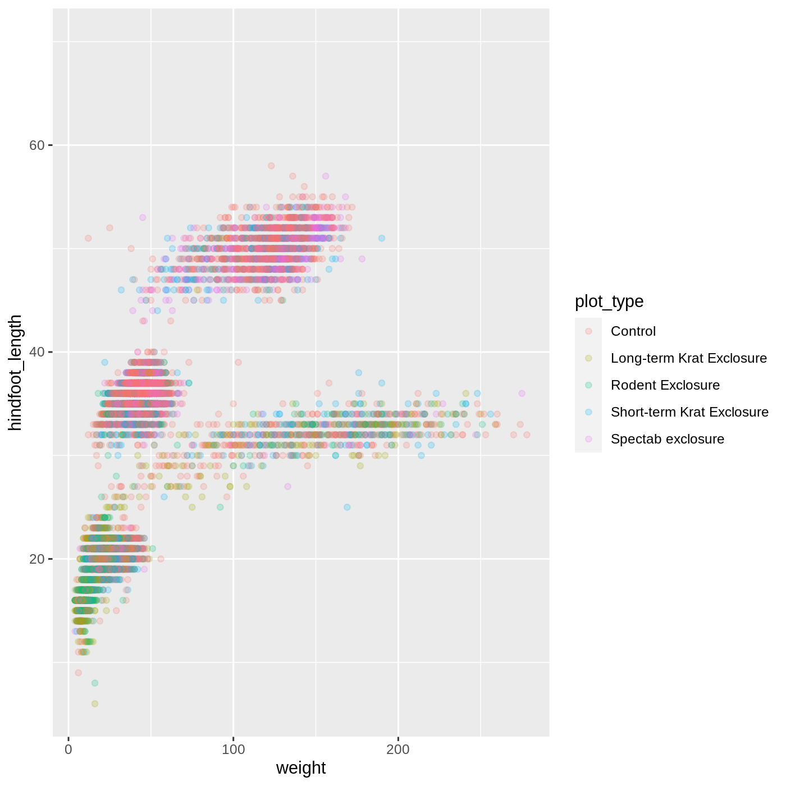
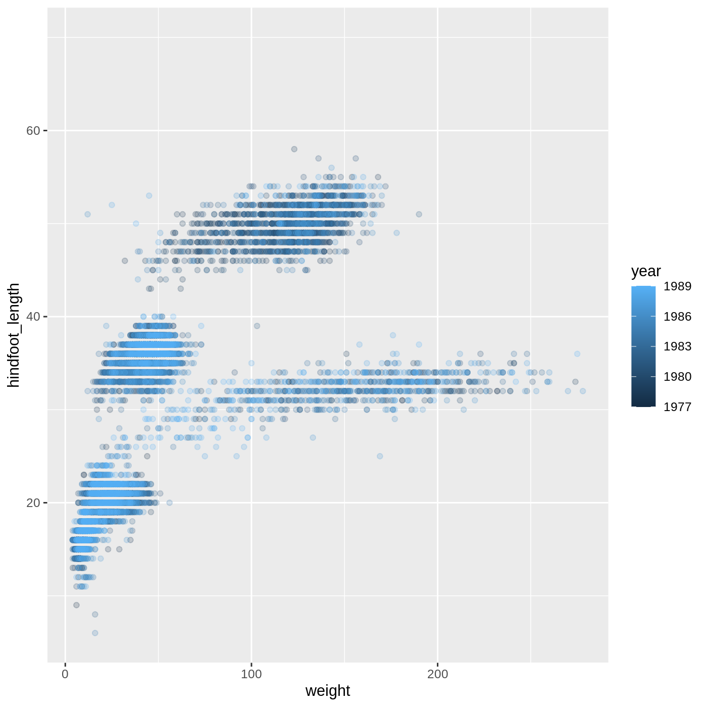
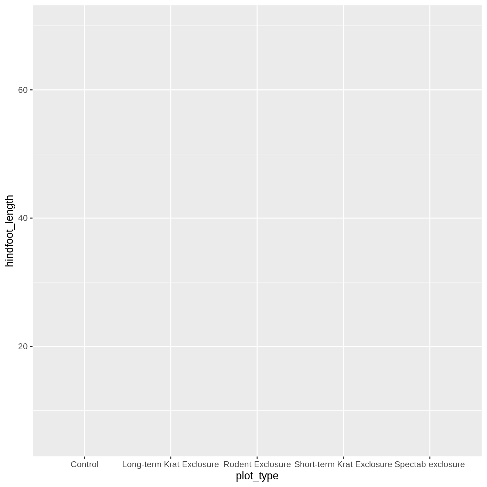
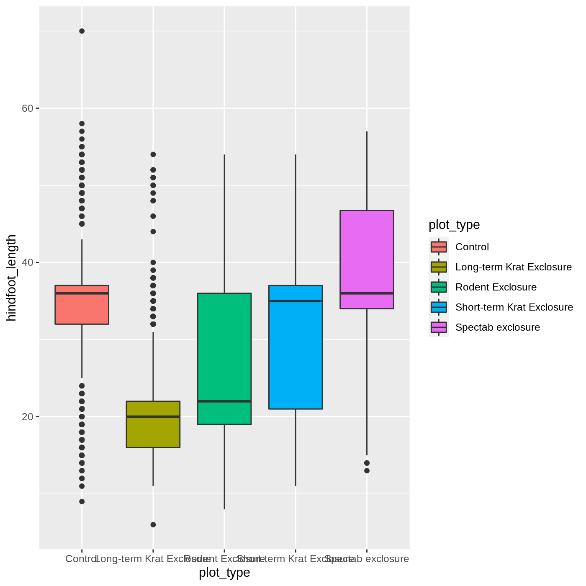

Data visualization with ggplot2
Overview
Teaching: 45
Exercises: 4
Questions
- How do you make plots using R?
Objectives
- Produce scatter plots and boxplots using ggplot.
- Map data variables to plot components.
- Modify the scales of plot components.
- Iteratively build and modify ggplot plots by adding layers.
- Change the appearance of existing ggplot plots using premade and customized themes.
- Describe what faceting is and apply faceting in ggplot.
- Combine and export plots.
Setup
We are going to be using functions from the ggplot2 package to create visualizations of data. Functions are predefined bits of code that automate more complicated actions. R itself has many built-in functions, but we can access many more by loading other packages of functions and data into R.
We start by loading the ggplot2 package, using the library() function.
Later we will learn how to read data into R, but for now we are going to use a clean and ready-to-use dataset that is provided by the ratdat data package. To make our dataset available, we need to load this package too.
Plotting with ggplot2
ggplot2 is a powerful package that allows you to create complex plots from tabular data (data that can be stored in a table). The gg in ggplot2 stands for “grammar of graphics”, and the package uses consistent vocabulary to create plots of widely varying types. Therefore, we only need small changes to our code if the underlying data changes or we decide to change from a box plot to a scatter plot. This approach helps you create publication-quality plots with minimal adjusting and tweaking.
ggplot2 is part of the tidyverse series of packages, which tend to like data in the “long” or “tidy” format, which means each column represents a single variable, and each row represents a single observation. Well-structured data will save you lots of time making figures with ggplot2. For now, we will use data that are already in this format. We start learning R by using ggplot2 because it relies on concepts that we will need when we talk about data transformation in the next lessons.
ggplot plots are built step by step by adding new layers, which allows for extensive flexibility and customization of plots.
To build a plot, we will use a basic template that can be used for different types of plots:
ggplot(data = <DATA>, mapping = aes(<MAPPINGS>)) + <GEOM_FUNCTION>()We use the ggplot() function to create a plot. In order to tell it what data to use, we need to specify the data argument. An argument is an input that a function takes, and you set arguments using the = sign.
ggplot(data = surveys)
We get a blank plot because we haven’t told ggplot() which variables we want to correspond to parts of the plot. We can specify the “mapping” of variables to plot elements, such as x/y coordinates, size, or shape, by using the aes() function. We’ll also add a comment, which is any line starting with a #. It’s a good idea to use comments to organize your code or clarify what you are doing.
# adding a mapping to x and y axes
ggplot(data = surveys, mapping = aes(x = weight, y = hindfoot_length))
Now we’ve got a plot with x and y axes corresponding to variables from surveys. However, we haven’t specified how we want the data to be displayed. We do this using geom_ functions, which specify the type of geometry we want, such as points, lines, or bars. We can add a geom_point() layer to our plot by using the + sign:
ggplot(data = surveys, mapping = aes(x = weight, y = hindfoot_length)) +
geom_point()Warning: Removed 3081 rows containing missing values (geom_point).
You may notice a warning that missing values were removed. If a variable necessary to make the plot is missing from a given row of data (in this case, hindfoot_length or weight), it can’t be plotted. ggplot2 just uses a warning message to let us know that some rows couldn’t be plotted.
Changing aesthetics
Building ggplot plots is often an iterative process, so we’ll continue developing the scatter plot we just made. You may have noticed that parts of our scatter plot have many overlapping points, making it difficult to see all the data. We can adjust the transparency of the points using the alpha argument, which takes a value between 0 and 1:
ggplot(data = surveys, mapping = aes(x = weight, y = hindfoot_length)) +
geom_point(alpha = 0.2)Warning: Removed 3081 rows containing missing values (geom_point).
We can also change the color of the points:
ggplot(data = surveys, mapping = aes(x = weight, y = hindfoot_length)) +
geom_point(alpha = 0.2, color = "blue")Warning: Removed 3081 rows containing missing values (geom_point).
Adding another variable
Let’s try coloring our points according to the plot type. Since we’re now mapping a variable (plot_type) to a component of the plot (color), we need to put the argument inside aes():
ggplot(data = surveys, mapping = aes(x = weight, y = hindfoot_length, color = plot_type)) +
geom_point(alpha = 0.2)Warning: Removed 3081 rows containing missing values (geom_point).
So far, we’ve told you what variables to put into your plots, but what if you want to know what else is in the surveys data? To explore the structure, you can use the str() function:
str(object = surveys)'data.frame': 16878 obs. of 13 variables:
$ record_id : int 1 2 3 4 5 6 7 8 9 10 ...
$ month : int 7 7 7 7 7 7 7 7 7 7 ...
$ day : int 16 16 16 16 16 16 16 16 16 16 ...
$ year : int 1977 1977 1977 1977 1977 1977 1977 1977 1977 1977 ...
$ plot_id : int 2 3 2 7 3 1 2 1 1 6 ...
$ species_id : chr "NL" "NL" "DM" "DM" ...
$ sex : chr "M" "M" "F" "M" ...
$ hindfoot_length: int 32 33 37 36 35 14 NA 37 34 20 ...
$ weight : int NA NA NA NA NA NA NA NA NA NA ...
$ genus : chr "Neotoma" "Neotoma" "Dipodomys" "Dipodomys" ...
$ species : chr "albigula" "albigula" "merriami" "merriami" ...
$ taxa : chr "Rodent" "Rodent" "Rodent" "Rodent" ...
$ plot_type : chr "Control" "Long-term Krat Exclosure" "Control" "Rodent Exclosure" ...str() will tell us how many observations/rows (obs) and variables/columns we have, as well as some information about each of the variables. We see the name of a variable (such as year), followed by the kind of variable (int for integer, chr for character), and the first 10 entries in that variable. We will talk more about different data types and structures later on.
Challenge 1: Modifying plots
- Try modifying the plot so that the shape of the point varies by
sex. Do you think this is a good way to representsexwith these data?
Solution
ggplot(data = surveys,
mapping = aes(x = weight, y = hindfoot_length, shape = sex)) +
geom_point(alpha = 0.2)Warning: Removed 3081 rows containing missing values (geom_point).
- Now try changing is so that the color of the points vary by
year. Do you notice a difference in the color scale compared to changing color by plot type? Why do you think this happened?
Solution
ggplot(data = surveys,
mapping = aes(x = weight, y = hindfoot_length, color = year)) +
geom_point(alpha = 0.2)Warning: Removed 3081 rows containing missing values (geom_point).
- For Part 2, the color scale is different compared to using
color = plot_typebecauseplot_typeandyearare different variable types.plot_typeis a categorical variable, soggplot2defaults to use a discrete color scale, whereasyearis a numeric variable, soggplot2uses a continuous color scale.
Changing scales
The default color scale isn’t always ideal: it isn’t friendly to viewers with colorblindness and it doesn’t translate well to grayscale. However, ggplot2 comes with quite a few other color scales, including the fantastic viridis scales, which are designed to be colorblind and grayscale friendly. We can change scales by adding scale_ functions to our plots:
ggplot(data = surveys, mapping = aes(x = weight, y = hindfoot_length, color = plot_type)) +
geom_point(alpha = 0.2) +
scale_color_viridis_d()Warning: Removed 3081 rows containing missing values (geom_point).
Scales don’t just apply to colors- any plot component that you put inside aes() can be modified with scale_ functions. Just as we modified the scale used to map plot_type to color, we can modify the way that weight is mapped to the x axis by using the scale_x_log10() function:
ggplot(data = surveys, mapping = aes(x = weight, y = hindfoot_length, color = plot_type)) +
geom_point(alpha = 0.2) +
scale_x_log10()Warning: Removed 3081 rows containing missing values (geom_point).
One nice thing about ggplot and the tidyverse in general is that groups of functions that do similar things are given similar names. Any function that modifies a ggplot scale starts with scale_, making it easier to search for the right function.
Changing position
Since many of our points plot on top of each other, we modified the alpha to increase visibility. Another way we can address this issue is by changing the position of the points themselves. We can add a small amount of random noise to the x/y positions of each point, also called “jittering”.
To do this, we can specify the position argument inside geom_point(). We will use the position_jitter() function to specify that we want our points to be jittered.
ggplot(data = surveys, mapping = aes(x = weight, y = hindfoot_length, color = plot_type)) +
geom_point(alpha = 0.2, position = position_jitter()) +
scale_color_viridis_d()Warning: Removed 3081 rows containing missing values (geom_point).
Another common use for position_ functions is when specifying whether you want a stacked or side-by-side bar chart.
Boxplot
Let’s try making a different type of plot altogether. We’ll start off with our same basic building blocks using ggplot() and aes().
ggplot(data = surveys, mapping = aes(x = plot_type, y = hindfoot_length))
This time, let’s try making a boxplot, which will have plot_type on the x axis and hindfoot_length on the y axis. We can do this by adding geom_boxplot() to our ggplot():
ggplot(data = surveys, mapping = aes(x = plot_type, y = hindfoot_length)) +
geom_boxplot()Warning: Removed 2733 rows containing non-finite values (stat_boxplot).
Just as we colored the points before, we can color our boxplot by plot_type as well:
ggplot(data = surveys, mapping = aes(x = plot_type, y = hindfoot_length, color = plot_type)) +
geom_boxplot()Warning: Removed 2733 rows containing non-finite values (stat_boxplot).
It looks like color has only affected the outlines of the boxplot, not the rectangular portions. This is because the color only impacts 1-dimensional parts of a ggplot: points and lines. To change the color of 2-dimensional parts of a plot, we use fill:
ggplot(data = surveys, mapping = aes(x = plot_type, y = hindfoot_length, fill = plot_type)) +
geom_boxplot()Warning: Removed 2733 rows containing non-finite values (stat_boxplot).
Adding geoms
One of the most powerful aspects of ggplot is the way we can add components to a plot in successive layers. While boxplots can be very useful for summarizing data, it is often helpful to show the raw data as well. With ggplot, we can easily add another geom_ to our plot to show the raw data. Let’s add geom_point() like we did in our scatterplot:
ggplot(data = surveys, mapping = aes(x = plot_type, y = hindfoot_length)) +
geom_boxplot() +
geom_point(position = position_jitter(), alpha = 0.2)Warning: Removed 2733 rows containing non-finite values (stat_boxplot).Warning: Removed 2733 rows containing missing values (geom_point).
Just as before, we can map plot_type to color by putting it inside aes().
ggplot(data = surveys, mapping = aes(x = plot_type, y = hindfoot_length, color = plot_type)) +
geom_boxplot() +
geom_point(position = position_jitter(), alpha = 0.2)Warning: Removed 2733 rows containing non-finite values (stat_boxplot).Warning: Removed 2733 rows containing missing values (geom_point).
Notice that both the color of the points and the color of the boxplot lines changed. Any time we specify an aes() mapping inside our initial ggplot() function, that mapping will apply to all our geoms.
If we want to limit the mapping to a single geom, we can put the mapping into the specific geom_ function, like this:
ggplot(data = surveys, mapping = aes(x = plot_type, y = hindfoot_length)) +
geom_boxplot() +
geom_point(aes(color = plot_type), position = position_jitter(), alpha = 0.2)Warning: Removed 2733 rows containing non-finite values (stat_boxplot).Warning: Removed 2733 rows containing missing values (geom_point).
Now our points are colored according to plot_type, but the boxplots are all the same color. One thing you might notice is that even with alpha = 0.2, the points obscure parts of the boxplot. This is because the geom_point() layer comes after the geom_boxplot() layer, which means the points are plotted on top of the boxes. To put the boxplots on top, we just switch the order of the layers:
ggplot(data = surveys, mapping = aes(x = plot_type, y = hindfoot_length)) +
geom_point(aes(color = plot_type), position = position_jitter(), alpha = 0.2) +
geom_boxplot()Warning: Removed 2733 rows containing non-finite values (stat_boxplot).Warning: Removed 2733 rows containing missing values (geom_point).
Now we have the opposite problem! The white fill of the boxplots completely obscures some of the points. To address this problem, we can remove the fill from the boxplots altogether, leaving only the black lines. To do this, we set fill to NA:
ggplot(data = surveys, mapping = aes(x = plot_type, y = hindfoot_length)) +
geom_point(aes(color = plot_type), position = position_jitter(), alpha = 0.2) +
geom_boxplot(fill = NA)Warning: Removed 2733 rows containing non-finite values (stat_boxplot).Warning: Removed 2733 rows containing missing values (geom_point).
Now we can see all the raw data and our boxplots on top.
Challenge 2: Change geoms
Make a plot similar to the last one, but use a violin plot instead of a boxplot. Remember that all geom functions start with geom_, followed by the type of geom.
For this plot, make the color of the points and outlines of the violins vary by plot_type, and set the fill of the violins to white.
Solution
ggplot(data = surveys,
mapping = aes(x = plot_type,
y = hindfoot_length,
color = plot_type)) +
geom_point(alpha = 0.1, position = position_jitter()) +
geom_violin(fill = "white")Warning: Removed 2733 rows containing non-finite values (stat_ydensity).Warning: Removed 2733 rows containing missing values (geom_point).
Changing themes
So far we’ve been changing the appearance of parts of our plot related to our data and the geom_ functions, but we can also change many of the non-data components of our plot. We can change the overall appearance using theme_ functions. Let’s try a black-and-white theme by adding theme_bw() to our plot:
ggplot(data = surveys, mapping = aes(x = plot_type, y = hindfoot_length)) +
geom_point(aes(color = plot_type), position = position_jitter(), alpha = 0.2) +
geom_boxplot(fill = NA) +
theme_bw()Warning: Removed 2733 rows containing non-finite values (stat_boxplot).Warning: Removed 2733 rows containing missing values (geom_point).
As you can see, a number of parts of the plot have changed. theme_ functions usually control many aspects of a plot’s appearance all at once, for the sake of convenience. To individually change parts of a plot, we can use the theme() function, which can take many different arguments to change things about the text, grid lines, background color, and more. Let’s try changing the size of the text on our axis titles. We can do this by specifying that the axis.title should be an element_text() with size set to 14.
ggplot(data = surveys, mapping = aes(x = plot_type, y = hindfoot_length)) +
geom_boxplot(fill = NA) +
geom_point(aes(color = plot_type), position = position_jitter(), alpha = 0.2) +
theme_bw() +
theme(axis.title = element_text(size = 14))Warning: Removed 2733 rows containing non-finite values (stat_boxplot).Warning: Removed 2733 rows containing missing values (geom_point).
Another change we might want to make is to remove the vertical grid lines. Since our x axis is categorical, those grid lines aren’t useful. To do this, inside theme(), we will change the panel.grid.major.x to an element_blank().
ggplot(data = surveys, mapping = aes(x = plot_type, y = hindfoot_length)) +
geom_point(aes(color = plot_type), position = position_jitter(), alpha = 0.2) +
geom_boxplot(fill = NA) +
theme_bw() +
theme(axis.title = element_text(size = 14), panel.grid.major.x = element_blank())Warning: Removed 2733 rows containing non-finite values (stat_boxplot).Warning: Removed 2733 rows containing missing values (geom_point).
Another useful change might be to remove the color legend, since that information is already on our x axis. For this one, we will set legend.position to “none”.
ggplot(data = surveys, mapping = aes(x = plot_type, y = hindfoot_length)) +
geom_point(aes(color = plot_type), position = position_jitter(), alpha = 0.2) +
geom_boxplot(fill = NA) +
theme_bw() +
theme(axis.title = element_text(size = 14),
panel.grid.major.x =element_blank(), legend.position = "none")Warning: Removed 2733 rows containing non-finite values (stat_boxplot).Warning: Removed 2733 rows containing missing values (geom_point).
Changing labels
Our plot is really shaping up now. However, we probably want to make our axis labels nicer, and perhaps add a title to the plot. We can do this using the labs() function:
ggplot(data = surveys, mapping = aes(x = plot_type, y = hindfoot_length)) +
geom_point(aes(color = plot_type), position = position_jitter(), alpha = 0.2) +
geom_boxplot(fill = NA) +
theme_bw() +
theme(axis.title = element_text(size = 14), legend.position = "top") +
labs(title = "Rodent size by plot type",
x = "Plot type",
y = "Hindfoot length (mm)")Warning: Removed 2733 rows containing non-finite values (stat_boxplot).Warning: Removed 2733 rows containing missing values (geom_point).
We removed our legend from this plot, but you can also change the titles of various legends using labs(). For example, labs(color = "Plot type") would change the title of a color scale legend to “Plot type”.
Challenge 3: Customizing a plot
Modify the previous plot by adding a descriptive subtitle and removing the legend. Increase the font size of the plot title and make it bold
Hint: “bold” is referred to as a font “face”
Solution
ggplot(data = surveys, mapping = aes(x = plot_type, y = hindfoot_length)) +
geom_point(aes(color = plot_type), position = position_jitter(), alpha = 0.2) +
geom_boxplot(fill = NA) +
theme_bw() +
theme(axis.title = element_text(size = 14), legend.position = "none",
plot.title = element_text(face = "bold", size = 20)) +
labs(title = "Rodent size by plot type",
subtitle = "Long-term dataset from Portal, AZ",
x = "Plot type",
y = "Hindfoot length (mm)")Warning: Removed 2733 rows containing non-finite values (stat_boxplot).Warning: Removed 2733 rows containing missing values (geom_point).
Faceting
One of the most powerful features of ggplot is the ability to quickly split a plot into multiple smaller plots based on a categorical variable, which is called faceting.
So far we’ve mapped variables to the x axis, the y axis, and color, but trying to add a 4th variable becomes difficult. Changing the shape of a point might work, but only for very few categories, and even then, it can be hard to tell the differences between the shapes of small points.
Instead of cramming one more variable into a single plot, we will use the facet_wrap() function to generate a series of smaller plots, split out by sex:
ggplot(data = surveys, mapping = aes(x = plot_type, y = hindfoot_length)) +
geom_point(aes(color = plot_type), position = position_jitter(), alpha = 0.2) +
geom_boxplot(fill = NA) +
theme_bw() +
theme(axis.title = element_text(size = 14), legend.position = "none", panel.grid.major.x = element_blank()) +
labs(title = "Rodent size by plot type",
x = "Plot type",
y = "Hindfoot length (mm)",
color = "Plot type") +
facet_wrap(vars(sex))Warning: Removed 2733 rows containing non-finite values (stat_boxplot).Warning: Removed 2733 rows containing missing values (geom_point).
Faceting comes in handy in many scenarios. It can be useful when:
- a categorical variable has too many levels to differentiate by color (such as a dataset with 50 countries)
- your data overlap heavily, obscuring categories
- you want to show more than 3 variables at once
- you want to see each category in isolation while allowing for general comparisons between categories
One issue with faceting is that the small plots are all packed together into a small space, which can cause things to get crammed together. You may have noticed that our x axis labels are overlapping, making them impossible to read. There are several ways we could fix this, but one is to turn the whole plot by 90 degrees, which we can do by adding coord_flip():
ggplot(data = surveys, mapping = aes(x = plot_type, y = hindfoot_length)) +
geom_point(aes(color = plot_type), position = position_jitter(), alpha = 0.2) +
geom_boxplot(fill = NA) +
theme_bw() +
theme(axis.title = element_text(size = 14), legend.position = "none", panel.grid.major.x = element_blank()) +
labs(title = "Rodent size by plot type",
x = "Plot type",
y = "Hindfoot length (mm)",
color = "Plot type") +
facet_wrap(vars(sex)) +
coord_flip()Warning: Removed 2733 rows containing non-finite values (stat_boxplot).Warning: Removed 2733 rows containing missing values (geom_point).
This flips the coordinates of our plot, which allows the horizontal plot_type labels to spread out without overlapping each other.
Arranging plots
While facetting allows us to combine many versions of the same plot, we might also want to combine completely separate plots together. In many publications, it is common to have multi-part plots split into panels A, B, C, etc.
Let’s create a series of plots that we can later stitch together.
First, we will make a scatter plot, which we will then assign to the object scatter_plot, using the assignment arrow <-. Our plot is now stored as the object scatter_plot. This process of assigning something to an object is not specific to ggplot2, but rather a general feature of R. We will be using it a lot in this lesson.
scatter_plot <- ggplot(data = surveys, mapping = aes(x = weight, y = hindfoot_length)) +
geom_point()Assigning something to an object does not generate any output. To view our plot, we can run the name of the object, scatter_plot.
scatter_plotWarning: Removed 3081 rows containing missing values (geom_point).
Now that we have our plot saved as an object, we can work with and manipulate it further. This object acts like any other ggplot, which means we can continue to add layers to it. For example, we can add a theme:
scatter_plot + theme_minimal()Warning: Removed 3081 rows containing missing values (geom_point).
Let’s go ahead and save another plot, this time a boxplot:
box_plot <- ggplot(data = surveys, mapping = aes(x = plot_type, y = hindfoot_length)) +
geom_boxplot()To combine entire ggplot plots together, we will use the package patchwork. If you do not have it installed, you can run install.packages("patchwork").
With patchwork loaded, all we have to do to put our two plots side by side is combine them with a +.
scatter_plot + box_plotWarning: Removed 3081 rows containing missing values (geom_point).Warning: Removed 2733 rows containing non-finite values (stat_boxplot).
To put the plots one on top of another, we can use the / symbol:
scatter_plot / box_plotWarning: Removed 3081 rows containing missing values (geom_point).Warning: Removed 2733 rows containing non-finite values (stat_boxplot).
Finally, using the & symbol, we can add a theme to the entire multi-plot:
scatter_plot / box_plot & theme_bw()Warning: Removed 3081 rows containing missing values (geom_point).Warning: Removed 2733 rows containing non-finite values (stat_boxplot).
Exporting plots
Finally, once we are happy with our plot, we probably want to save it in a format that we can share with others or put into a document. To do this, we will use the ggsave() function. First we will combine our plots using patchwork, and use the plot_annotation() function to add a title to our multi-plot, as well as label the individual plots as A and B.
scatter_plot / box_plot + plot_annotation(title = "Rodent size plots",
tag_levels = "A") & theme_minimal() Warning: Removed 3081 rows containing missing values (geom_point).Warning: Removed 2733 rows containing non-finite values (stat_boxplot).
After this, we can run ggsave() to save the most recently created plot. The first argument we give is the path to the file we want to save, including the correct file extension. This code will make an image called rodent_size_plots.jpg on our Desktop. We are making a .jpg, but you can save .pdf, .tiff, and other file formats. We can also specify things like the width and height of the plot in inches.
ggsave("~/Desktop/rodent_size_plots.jpg", height = 6, width = 8)Challenge 4: Make your own plot
Try making your own plot! You can run str(surveys) to explore variables you might use in your new plot. Feel free to use variables we have already seen, or some we haven’t explored yet.
Here are a couple ideas to get you started: - make a histogram of one of the numeric variables - try using a different color scale_ - try changing the size of points or thickness of lines in a geom
Keypoints
- the
ggplot()function initiates a plot, andgeom_functions add representations of your data - use
aes()when mapping a variable from the data to a part of the plot - use
scale_functions to modify the scales used to represent variables - use premade
theme_functions to broadly change appearance, and thetheme()function to fine-tune - start simple and build your plots iteratively